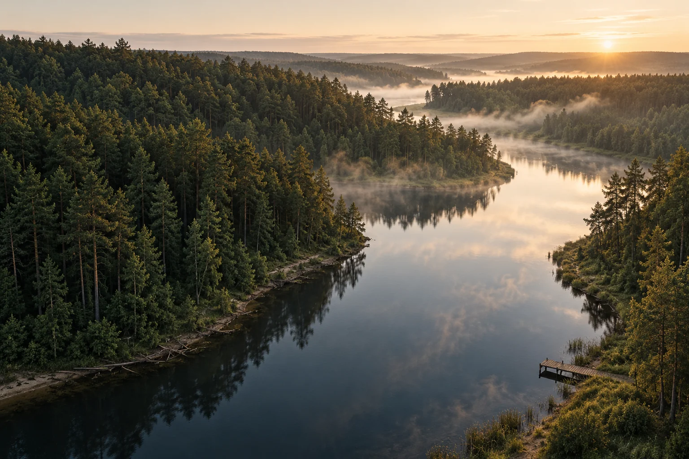
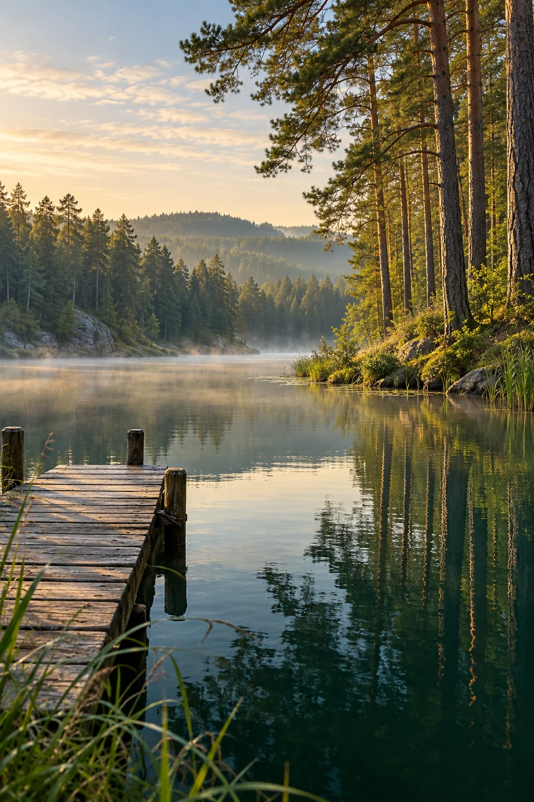
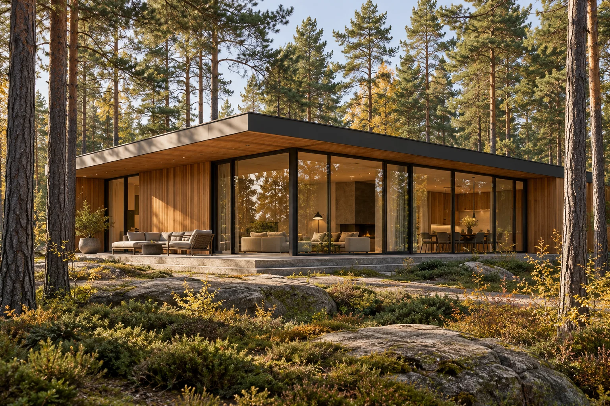

ТВЕРСКАЯ ОБЛАСТЬ · У ВОДЫ И ЛЕСА
Жизнь у воды
в 120 км от Москвы
64 участка в сосновом лесу.
Место, где можно услышать себя.
01 / МЕСТО, КОТОРОЕ ЧУВСТВУЕШЬ
СОСНОВЫЙ БЕРЕГБлиже к природе.
Ближе к себе.
Утро начинается с леса за окном.
Вечер — с прогулки к воде.
«Сосновый берег» — концепция камерного посёлка под Тверью. Здесь дом становится продолжением пейзажа, а свободное время действительно остаётся вашим.
Сосновый лесПриродное окружение посёлка
Река рядом400 м до воды — требует подтверждения
Связь с городомМаршрут и время в пути уточняются

привилегия
Показатели требуют подтверждения. 120 км от Москвы и 1,5 часа от МКАД требуют проверки по точному адресу и маршруту; время зависит от дорожной ситуации.
02 / ВЫБЕРИТЕ СВОЁ МЕСТО
64 УЧАСТКА · ОДНА ФИЛОСОФИЯВаш участок.
Ваша история.
У леса, ближе к воде или в глубине посёлка.
Наведите на участок или выберите его касанием.
Схема создана для демонстрации интерфейса и не отражает реальное межевание, береговую линию или доступность участков. Доступные по фильтру: 64.
03 / АРХИТЕКТУРА ЖИЗНИ
ЧЕТЫРЕ ХАРАКТЕРА ВАШЕГО ДОМАСоздан быть
вашим.
Лаконичная архитектура. Природные материалы.
Проекты, которые оставляют место пейзажу.
Концепции и параметры — примеры. Все изображения созданы ИИ; это не фотографии построенных домов. Стоимость под ключ требует состава работ и сметы клиента.

РОСКОШЬ ПРОСТЫХ ВЕЩЕЙ
Больше воздуха.
Меньше суеты.
Дом, в который хочется возвращаться.
Лес, из которого не хочется уходить.
04 / ПРИВЫЧНЫЙ КОМФОРТ
В ПРИРОДНОМ ОКРУЖЕНИИВсё важное.
Внутри вашего мира.
Инфраструктура загородной жизни.
Наличие и готовность каждого объекта подтвердит клиент.
05 / ОТ ПРОЕКТА К РЕАЛЬНОСТИ
ОТКРЫТО О ГЛАВНОМКак растёт
«Сосновый берег».
От замысла к дому — шаг за шагом.
Пока показываем иллюстрацию; реальные фотоотчёты ждём от клиента.

Реальная история — в реальных кадрах
Иллюстрация этапа строительства, созданная ИИ. Реальные фотоотчёты и даты нужны от клиента.
06 / ПРОДУМАННЫЙ СЛЕДУЮЩИЙ ШАГ
УСЛОВИЯ ПОКУПКИУ каждого дома
свой путь к вам.
07 / ПОЧУВСТВУЙТЕ ЭТО МЕСТО
ЛИЧНОЕ ЗНАКОМСТВОПриезжайте.
Остальное
почувствуете сами.
Посмотрите территорию, пройдите к воде
и представьте здесь свой дом.
Выберите удобную дату.
После подключения формы менеджер сможет согласовать с вами время и маршрут.
08 / ПУТЬ К ВАШЕМУ ДОМУ
ВСТРЕТИМСЯ У ЛЕСАДо встречи
на берегу.
Тверская область, под Тверью.
Точный адрес и точка въезда нужны от клиента.
Офис продаж
Адрес и график работы нужны от клиента.
Телефон отдела продаж нужен от клиента.
Уточнить маршрут на экскурсию ↗Интерактивная карта проезда появится после подтверждения координат.